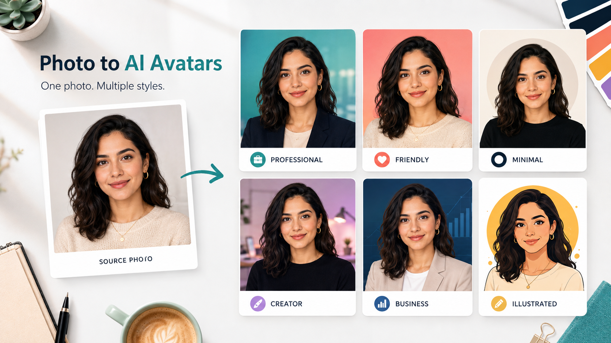

Промтзилла
Аватар должен оставаться похожим на человека, но подстраиваться под площадку: деловой профиль, личный блог, экспертная страница или творческий аккаунт.

Пошаговая инструкция
- 1Выбери чёткое фото лица без сильной тени и фильтров.
- 2Определи, где будет использоваться аватар: Telegram, блог, резюме, экспертный профиль.
- 3Попроси сохранить узнаваемость лица и сделать несколько стилей.
- 4Проверь, как аватар выглядит маленьким кружком.
- 5Выбери вариант без лишних деталей и странной ретуши.
Какой результат просить
Хороший результат — несколько вариантов одного и того же человека, где меняется фон, настроение и стилистика, но не внешность. Для такой задачи можно открыть GPT Image в Study24, дать вводные и попросить несколько вариантов под разные цели.
Промт
RU
Создай аватар для соцсетей по этому фото. Нужно: — сохранить узнаваемость лица, возраст, черты и естественную мимику; — сделать 6 вариантов: деловой, дружелюбный, минималистичный, экспертный, творческий и иллюстрированный; — заменить фон на чистый и аккуратный; — улучшить свет без пластиковой ретуши; — кадрировать так, чтобы аватар хорошо читался в круге. Не меняй форму лица, цвет глаз, причёску и важные особенности внешности.
EN
Create social media avatars from this photo. Requirements: — preserve face recognizability, age, features, and natural expression; — create 6 versions: professional, friendly, minimal, expert, creator, and illustrated; — replace the background with a clean one; — improve lighting without plastic retouching; — crop so the avatar works well in a circle. Do not change face shape, eye color, hairstyle, or important appearance details.
Важно
Не используй аватар, если нейросеть сильно изменила лицо: это снижает доверие к профилю.
Теги